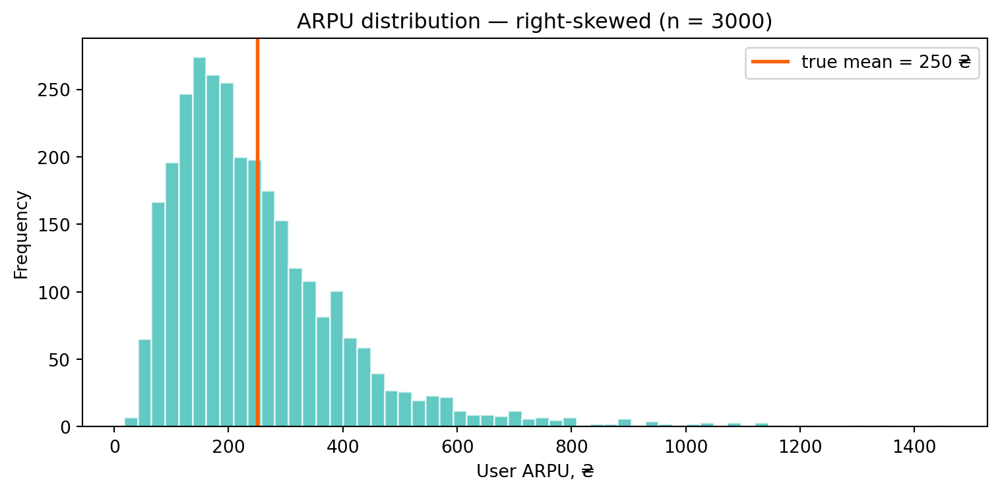
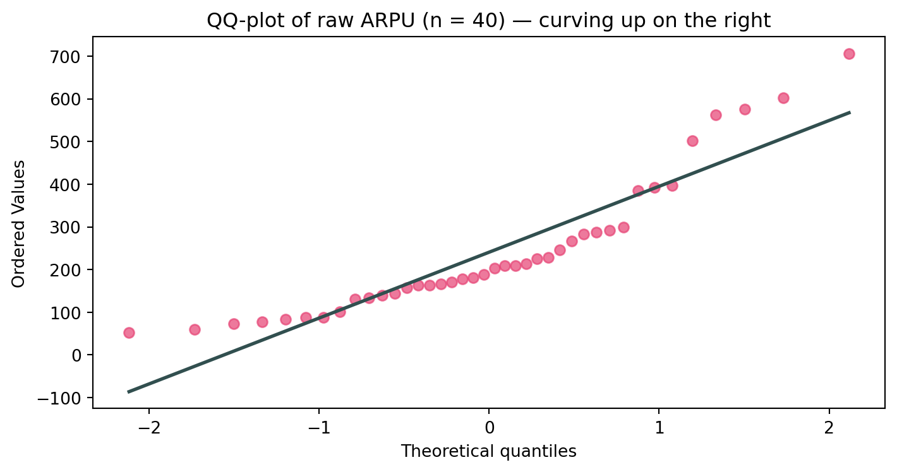
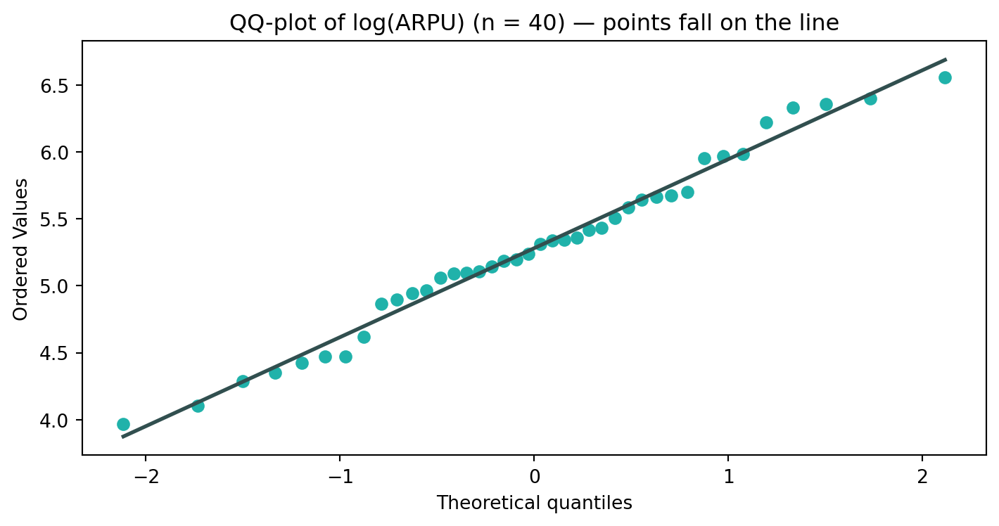
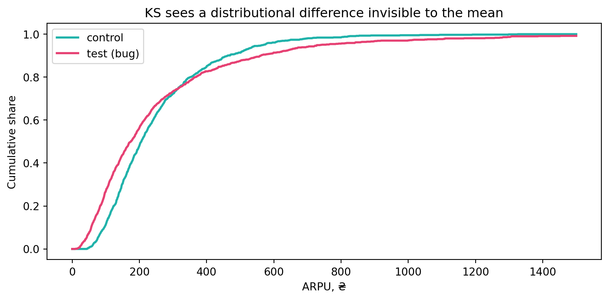
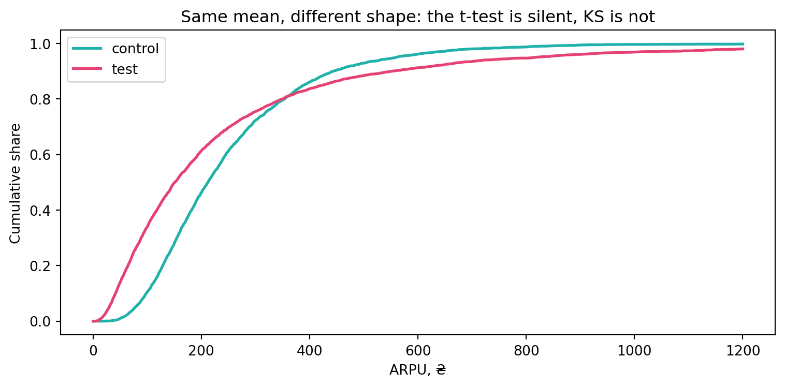
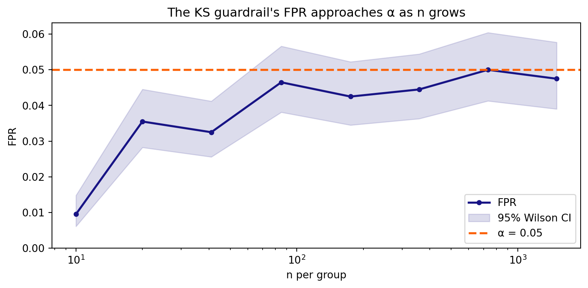

In the lecture we assembled a toolkit where everything reduces to one idea — compare cumulative distribution functions (CDFs):
Kolmogorov (one-sample) — is the data from a known distribution \(F_0\)?
QQ-plot and Shapiro–Wilk — is the data normal?
Kolmogorov–Smirnov (two-sample) — do two samples come from the same distribution?
Today we turn these into A/B-test guardrails for the GreenBowl delivery app (the same one as in Practices 4–5). We answer four applied questions:
Is the metric normal enough to trust the \(t\)-test on a small sample from a new city?
Is the randomization honest — did the split produce identical distributions (the A/A guardrail)?
Did the experiment change the shape of the distribution where the \(t\)-test on the mean saw nothing?
Why does a paired design (before/after on the same users) break the two-sample KS?
NoteGround rules
We build a small dist_guardrail tool step by step (normality → homogeneity → verdict), and take the criteria ready-made: scipy.stats.shapiro, scipy.stats.ks_2samp.
Each version is an extension of the previous one; the final steps reuse earlier functions.
After each version there is a “Your turn” mini-task with a collapsed solution.
Where we need to validate the criterion itself, we return to Monte Carlo from Practice 5: we generate \(H_0\)/\(H_1\) ourselves and count the errors.
1 Case study: the ARPU distribution at GreenBowl
The GreenBowl experimentation team runs many small A/B tests per city and cuisine. The metric — ARPU (revenue per user) — is heavily skewed: a mass of small orders + a long right tail of “whales”.
Tools at hand: Shapiro–Wilk, QQ-plot, two-sample KS.
Significance level:\(\alpha = 0.05\).
We generate ARPU as a lognormal with a given mean (sigma controls the tail heaviness without shifting the mean) — exactly as in Practice 5:
def arpu_sample(true_mean, n, sigma=0.6):"""A lognormal ARPU sample with a given mean true_mean.""" mu = np.log(true_mean) - sigma**2/2return np.random.lognormal(mean=mu, sigma=sigma, size=n)np.random.seed(73)demo = arpu_sample(250, 3000)fig, ax = plt.subplots(figsize=(8, 4))ax.hist(demo, bins=60, color=turquoise, alpha=0.7, edgecolor="white")ax.axvline(250, color=red, lw=2, label="true mean = 250 ₴")ax.set_xlabel("User ARPU, ₴")ax.set_ylabel("Frequency")ax.set_title("ARPU distribution — right-skewed (n = 3000)")ax.legend()plt.tight_layout()plt.show()print(f"Mean = {demo.mean():.1f} ₴, median = {np.median(demo):.1f} ₴ "f"→ skewness is obvious (mean > median)")

Mean = 250.8 ₴, median = 212.6 ₴ → skewness is obvious (mean > median)
The distribution is clearly not normal. That is where our questions begin.
2 Part I — is the metric normal? (Shapiro + QQ)
On a small sample the \(t\)-test relies on normality of the data (a large \(n\) would be rescued by the CLT, but a new city has only a few dozen users per week). Before trusting the \(t\)-test, the metric must be checked.
2.1 Version 1 — a normality verdict
def check_normality(sample, alpha=0.05):"""Version 1. Shapiro–Wilk test + a human-readable verdict.""" W, p = stats.shapiro(sample)if p > alpha: verdict ="✅ do not reject normality → the t-test can be trusted"else: verdict ="⛔ reject normality → on a small n the t-test is risky"return {"W": W, "p": p, "verdict": verdict}
A QQ-plot shows how exactly the data deviates (tails, skew) — what a single \(p\)-value hides. Let’s look at a small ARPU sample from a new city:
np.random.seed(7)city_arpu = arpu_sample(250, 40) # new city: 40 usersfig, ax = plt.subplots(figsize=(7.5, 4))stats.probplot(city_arpu, dist="norm", plot=ax)ax.get_lines()[0].set(marker="o", ms=6, color=red_pink, alpha=0.7)ax.get_lines()[1].set(color="#314f4f", lw=2)ax.set_title("QQ-plot of raw ARPU (n = 40) — curving up on the right")plt.tight_layout()plt.show()r = check_normality(city_arpu)print(f"Shapiro W={r['W']:.3f}, p={r['p']:.4f}")print(r["verdict"])

Shapiro W=0.862, p=0.0002
⛔ reject normality → on a small n the t-test is risky
Raw ARPU is skewed → Shapiro rejects, and the QQ-plot bends upward on the right tail. At \(n=40\) this is a danger signal for the \(t\)-test.
TipAnalyst’s trick: the log transform
The logarithm of a lognormal variable is normal. Let’s check the metric on the log scale (this is how revenue / time-to-event is often analyzed):
fig, ax = plt.subplots(figsize=(7.5, 4))stats.probplot(np.log(city_arpu), dist="norm", plot=ax)ax.get_lines()[0].set(marker="o", ms=6, color=turquoise)ax.get_lines()[1].set(color="#314f4f", lw=2)ax.set_title("QQ-plot of log(ARPU) (n = 40) — points fall on the line")plt.tight_layout()plt.show()r = check_normality(np.log(city_arpu))print(f"log(ARPU): Shapiro p={r['p']:.4f} → {r['verdict']}")

log(ARPU): Shapiro p=0.6758 → ✅ do not reject normality → the t-test can be trusted
On the log scale the points fall on the line, Shapiro does not reject — the \(t\)-test on \(\log(\text{ARPU})\) is valid even on a small sample. The price: we now compare geometric means, not arithmetic ones (a different meaning of the effect — worth agreeing on with the product team).
TipYour turn 1
Generate a sample that is genuinely normal (np.random.normal(250, 30, 40)) and run check_normality + a QQ-plot. What does a “good” QQ look like?
Compare the Shapiro \(p\)-value for raw ARPU at \(n=40\) and \(n=400\). On which sample is the rejection “more confident” — and why is this not about “the data becoming less normal”?
Applied. The “time to first order” metric is also skewed. Generate it as np.random.exponential(3, 50) and decide from the QQ + Shapiro: analyze it on the raw or the log scale?
NoteSolution 1
# (1) reference normal datanp.random.seed(1)good = np.random.normal(250, 30, 40)print("Normal data:", check_normality(good)["verdict"])# (2) same distribution, different nnp.random.seed(2)print(f"\nRaw ARPU, n=40: p={check_normality(arpu_sample(250,40))['p']:.4f}")print(f"Raw ARPU, n=400: p={check_normality(arpu_sample(250,400))['p']:.6f}")# (3) time to ordernp.random.seed(3)t2o = np.random.exponential(3, 50)print(f"\nTime to order (raw): p={check_normality(t2o)['p']:.4f}")print(f"Time to order (log): p={check_normality(np.log(t2o))['p']:.4f}")
Normal data: ✅ do not reject normality → the t-test can be trusted
Raw ARPU, n=40: p=0.0000
Raw ARPU, n=400: p=0.000000
Time to order (raw): p=0.0000
Time to order (log): p=0.0236
Interpretation. Normal data → points on the line, large \(p\). The same skewed distribution at a larger \(n\) gives a smaller\(p\): the test becomes more sensitive — this is not “the data changed”, it is more evidence against normality (a foretaste of the large-\(n\) trap). A skewed “time to event” is better analyzed on the log scale.
3 Large \(n\): the normality-test trap
The lecture’s most important caveat: on large samples normality tests reject everything. Real data is never exactly normal, so at a large \(n\) even a tiny, harmless deviation becomes “significant”.
np.random.seed(10)print("Almost-normal data with a tiny skew contamination:")for n in (50, 500, 2000, 5000): x = np.random.normal(0, 1, n) x[0] +=0.002* n # microscopic outlier p = stats.shapiro(x).pvalueprint(f" n={n:>5d}: p={p:.4f} "f"{'⛔ rejects'if p <0.05else'✅ keeps'}")
Almost-normal data with a tiny skew contamination:
n= 50: p=0.9782 ✅ keeps
n= 500: p=0.7291 ✅ keeps
n= 2000: p=0.8414 ✅ keeps
n= 5000: p=0.0000 ⛔ rejects
WarningWhat to do about it in A/B
On large samples do not chase the normality test’s \(p\)-value: rely on the QQ-plot (the shape matters more than the verdict) + the CLT (it already makes the \(t\)-test valid — we proved this by simulation in Practice 5). Normality tests are a tool for small/medium samples.
3.1 The estimated-parameters trap → Lilliefors
Another common mistake: testing goodness-of-fit with Kolmogorov while plugging in parameters estimated from the same sample. Then \(F_0\) “adapts” to the data and the criterion becomes far too conservative. If the parameters are unknown you need the Lilliefors correction.
np.random.seed(11)naive, lilli =0, 0for _ inrange(2000): x = np.random.normal(0, 1, 50)# ❌ WRONG: plug the sample mean & sd into kstest p_naive = stats.kstest(x, stats.norm(x.mean(), x.std(ddof=1)).cdf).pvalue# ✅ RIGHT: the Lilliefors correction for estimated parameters p_lilli = lilliefors(x, dist="norm")[1] naive += p_naive <0.05 lilli += p_lilli <0.05print(f"Share of H0 rejections (data IS normal, should be ≈5%):")print(f" naive KS with estimated parameters: {naive/2000:.3f} ⛔ almost 0% (too conservative)")print(f" Lilliefors: {lilli/2000:.3f} ✅ ≈ 5%")
Share of H0 rejections (data IS normal, should be ≈5%):
naive KS with estimated parameters: 0.000 ⛔ almost 0% (too conservative)
Lilliefors: 0.056 ✅ ≈ 5%
TipYour turn 2
Find roughly the \(n\) from which Shapiro starts to reliably reject raw ARPU (arpu_sample(250, n)). This is the “danger zone” where the normality test reacts to the skew itself.
Why does the naive KS above give ~0% rejections even though the data is normal? (Hint: what does \(F_0\) do when its parameters come from the data itself?)
Applied. Replace dist="norm" with dist="exp" in lilliefors(...) and test it on np.random.exponential(3, 100): is the data consistent with an exponential distribution?
NoteSolution 2
# (1) from what n Shapiro confidently sees the ARPU skewnp.random.seed(20)for n in (20, 40, 80, 160): ps = [stats.shapiro(arpu_sample(250, n)).pvalue for _ inrange(50)]print(f" n={n:>3d}: rejected in {np.mean(np.array(ps) <0.05):.0%} of runs")# (3) consistency with an exponentialnp.random.seed(21)exp_data = np.random.exponential(3, 100)print(f"\nLilliefors vs exp: p={lilliefors(exp_data, dist='exp')[1]:.3f} "f"→ {'consistent'if lilliefors(exp_data, dist='exp')[1] >0.05else'no'}")
n= 20: rejected in 60% of runs
n= 40: rejected in 92% of runs
n= 80: rejected in 100% of runs
n=160: rejected in 100% of runs
Lilliefors vs exp: p=0.238 → consistent
Interpretation. The larger the \(n\), the more confidently Shapiro rejects skewed ARPU — because evidence against normality accumulates. The naive KS gives ~0% because the plugged-in \(\bar x, s\) make \(F_0\) almost perfect for this data: the gap \(D_n\) is artificially small. Lilliefors corrects this and keeps an honest 5%.
4 Part II — the A/A guardrail: are the groups’ distributions identical?
Before analyzing an A/B test we must make sure the randomization is honest: if the split is correct, control and test have the same distribution of the whole metric, not just equal means. This is a homogeneity problem, solved by the two-sample KS.
4.1 Version 2 — homogeneity of two samples
def same_distribution(x, y, alpha=0.05):"""Version 2. Two-sample KS: are x and y from the same distribution?""" D, p = stats.ks_2samp(x, y)if p > alpha: verdict ="✅ distributions do not differ (randomization ok)"else: verdict ="⛔ distributions differ (suspected bug / effect)"return {"D": D, "p": p, "verdict": verdict}
A/A scenario: we split users randomly in half, no treatment. KS should not reject \(H_0\).
np.random.seed(30)pool = arpu_sample(250, 2000) # one week of logsidx = np.random.permutation(2000)A, B = pool[idx[:1000]], pool[idx[1000:]] # an honest random splitr = same_distribution(A, B)print(f"A/A: KS D={r['D']:.4f}, p={r['p']:.4f} → {r['verdict']}")
A/A: KS D=0.0360, p=0.5363 → ✅ distributions do not differ (randomization ok)
Broken randomization: imagine a bug where “whales” land in the test group more often (e.g. the splitter assigns users by their last big order). The means may be close, but the distributions are not.
np.random.seed(31)control = arpu_sample(250, 1000, sigma=0.6)treated = arpu_sample(250, 1000, sigma=0.9) # bug: heavier tail in testr = same_distribution(control, treated)print(f"Broken split: KS p={r['p']:.4f} → {r['verdict']}")print(f" Yet the means are nearly equal: {control.mean():.0f} ₴ vs {treated.mean():.0f} ₴")grid = np.linspace(0, 1500, 1000)ecdf =lambda s, g: np.searchsorted(np.sort(s), g, side="right") /len(s)fig, ax = plt.subplots(figsize=(8, 4))ax.plot(grid, ecdf(control, grid), color=turquoise, lw=2, label="control")ax.plot(grid, ecdf(treated, grid), color=red_pink, lw=2, label="test (bug)")ax.set_xlabel("ARPU, ₴"); ax.set_ylabel("Cumulative share")ax.set_title("KS sees a distributional difference invisible to the mean")ax.legend()plt.tight_layout()plt.show()
Broken split: KS p=0.0000 → ⛔ distributions differ (suspected bug / effect)
Yet the means are nearly equal: 250 ₴ vs 257 ₴

ImportantWhy this matters for the A/B team
A KS-based A/A guardrail catches randomization leaks (Sample Ratio Mismatch by shape, whale spillover, splitter bugs) before you believe in an “effect”. A check on the mean would miss it — the means are nearly equal while the distributions differ.
TipYour turn 3
Make treated identical in parameters (sigma=0.6) but shift the mean by +30 ₴. Does KS catch it? And if you looked only at the mean — at what \(n\) would you notice?
KS reacts to any difference. Keep the same mean and spread, but mix 2% of zero orders into the test group (np.where(np.random.rand(n)<0.02, 0, base)). Does KS reject?
Applied. Wrap same_distribution into a pre-period check: compare the groups’ ARPU for the week before the experiment (where no effect can exist). What does a rejection on the pre-period mean?
NoteSolution 3
np.random.seed(32)base = arpu_sample(250, 1000, sigma=0.6)# (1) mean shiftshifted = arpu_sample(280, 1000, sigma=0.6)print("Shift +30 ₴:", same_distribution(base, shifted)["verdict"])# (2) mixing in zeros at the same mean/spreadzeros = arpu_sample(250, 1000, sigma=0.6)zeros = np.where(np.random.rand(1000) <0.02, 0.0, zeros)print("2% zeros mixed in:", same_distribution(base, zeros)["verdict"])# (3) pre-periodpre_ctrl = arpu_sample(250, 1000, sigma=0.6)pre_test = arpu_sample(250, 1000, sigma=0.6)print("Pre-period (should be ok):", same_distribution(pre_ctrl, pre_test)["verdict"])
Shift +30 ₴: ✅ distributions do not differ (randomization ok)
2% zeros mixed in: ✅ distributions do not differ (randomization ok)
Pre-period (should be ok): ✅ distributions do not differ (randomization ok)
Interpretation. KS catches both the mean shift and the zero contamination at the same mean/spread — because it reacts to any CDF difference. A rejection on the pre-period is an alarm: no effect can exist there, so it is a randomization bug or dissimilar groups. A clean pre-period is a necessary (though not sufficient) condition for trusting the A/B test.
5 KS sees what the \(t\)-test misses
The lecture’s main thesis in action. Imagine a feature that does not change the mean ARPU but redistributes it: light users start paying a bit more, whales a bit less. The mean is the same, the shape is different.
np.random.seed(40)n =4000control = arpu_sample(250, n, sigma=0.6) # beforetreated = arpu_sample(250, n, sigma=1.0) # same mean, wider spread# t-test on the meant_p = stats.ttest_ind(treated, control, equal_var=False).pvalue# KS on the whole distributionks_p = same_distribution(control, treated)["p"]print(f"Means: control={control.mean():.0f} ₴, test={treated.mean():.0f} ₴")print(f"t-test (mean): p={t_p:.3f} → {'sees NO difference'if t_p>0.05else'sees it'}")print(f"KS (distribution): p={ks_p:.4f} → {'sees the difference'if ks_p<0.05else'no'}")grid = np.linspace(0, 1200, 1000)fig, ax = plt.subplots(figsize=(8, 4))ax.plot(grid, ecdf(control, grid), color=turquoise, lw=2, label="control")ax.plot(grid, ecdf(treated, grid), color=red_pink, lw=2, label="test")ax.set_xlabel("ARPU, ₴"); ax.set_ylabel("Cumulative share")ax.set_title("Same mean, different shape: the t-test is silent, KS is not")ax.legend()plt.tight_layout()plt.show()
Means: control=252 ₴, test=251 ₴
t-test (mean): p=0.946 → sees NO difference
KS (distribution): p=0.0000 → sees the difference

ImportantTakeaway
The \(t\)-test only answers “did the mean move”. If the effect is in the shape (variance, tails, share of zeros), it is caught by KS, not the \(t\)-test. So in an A/B report it is useful to show both: the mean + the distribution. The flip side — KS is sensitive to everything, so on its own it does not tell you whether the difference is business-significant.
TipYour turn 4
Gradually shrink the shape difference (test sigma 0.9 → 0.7 → 0.61). From what point does KS stop seeing the difference at \(n=4000\)?
Do the opposite: same shape, but a mean shifted by +5 ₴. Now who is more sensitive at \(n=4000\) — the \(t\)-test or KS? Why is the \(t\)-test usually more powerful for a mean shift?
Applied. Compute the share of zero orders in each group. Why is the right criterion for “share of zeros” a \(z\)-test for proportions, not KS?
NoteSolution 4
np.random.seed(41)ctrl = arpu_sample(250, 4000, sigma=0.6)# (1) shrinking the shape differenceprint("Shape difference (KS):")for s in (0.9, 0.7, 0.61): tr = arpu_sample(250, 4000, sigma=s)print(f" sigma={s}: KS p={stats.ks_2samp(ctrl, tr).pvalue:.3f}")# (2) mean shift: the t-test is more powerfulnp.random.seed(42)ctrl = arpu_sample(250, 4000); tr = arpu_sample(255, 4000)print(f"\nShift +5 ₴: t-test p={stats.ttest_ind(tr, ctrl, equal_var=False).pvalue:.3f} "f"KS p={stats.ks_2samp(ctrl, tr).pvalue:.3f}")
Interpretation. The smaller the shape difference, the larger the \(n\) KS needs to catch it (at sigma=0.61 the difference is already almost invisible). For a mean shift the \(t\)-test is usually more powerful: it is “tuned” to exactly that difference, while KS “spreads” its sensitivity over the whole shape. For the share of zeros the right tool is a \(z\)-test for proportions: the metric is binary and we care about a single parameter, not the whole CDF.
6 Is our KS guardrail correct? (Monte Carlo)
The KS guardrail is also a criterion, so let’s check it as in Practice 5: does it keep the promised 5% false positives on our skewed data, and from what \(n\)? We generate A/A (both groups from one distribution → \(H_0\) is true) and compute the FPR with a confidence interval.
def ks_fpr(gen, n, n_exps=3000, alpha=0.05, seed=73):"""FPR of the two-sample KS under H0 (both groups from gen) + 95% Wilson CI.""" np.random.seed(seed) rej =0for _ inrange(n_exps): rej += stats.ks_2samp(gen(n), gen(n)).pvalue < alpha lo, hi = proportion_confint(rej, n_exps, alpha=0.05, method="wilson")return {"fpr": rej / n_exps, "ci": (lo, hi)}
arpu_aa =lambda n: arpu_sample(250, n)for n in (20, 100, 1000): r = ks_fpr(arpu_aa, n) inside = r["ci"][0] <=0.05<= r["ci"][1]print(f"n={n:>4d}: FPR={r['fpr']:.4f} "f"CI=({r['ci'][0]:.4f}, {r['ci'][1]:.4f}) "f"{'✅'if inside else'🟡 conservative'}")
On small samples KS is conservative (FPR below 5%) — because of the discreteness of the empirical CDFs (jumps of \(1/n\)). This is safe (fewer false alarms) but costs power. As \(n\) grows the FPR tightens toward \(\alpha\). The lecture’s rule of thumb: \(\ge 1000\) — ideal, \(50\)–\(1000\) — fine, \(<50\) — with care.
Code
grid = np.unique(np.geomspace(10, 1500, 8).astype(int))fprs, los, his = [], [], []for n in grid: r = ks_fpr(arpu_aa, int(n), n_exps=2000) fprs.append(r["fpr"]); los.append(r["ci"][0]); his.append(r["ci"][1])fig, ax = plt.subplots(figsize=(8, 4))ax.plot(grid, fprs, color=blue, lw=2, marker="o", ms=4, label="FPR")ax.fill_between(grid, los, his, color=blue, alpha=0.15, label="95% Wilson CI")ax.axhline(0.05, color=red, ls="--", lw=2, label="α = 0.05")ax.set_xscale("log"); ax.set_ylim(bottom=0)ax.set_xlabel("n per group"); ax.set_ylabel("FPR")ax.set_title("The KS guardrail's FPR approaches α as n grows")ax.legend()plt.tight_layout()plt.show()

TipYour turn 5
Measure the guardrail’s power on the “shape effect”: control arpu_sample(250, n), test arpu_sample(250, n, sigma=1.0). How many users are needed to catch such an effect with power ≥ 0.8?
On a small \(n\) KS is conservative. Does that mean the guardrail is incorrect at \(n=20\)? (Recall the difference “conservative” vs “invalid” from Practice 5.)
Applied. Compare the power of KS and the \(t\)-test on a mean shift of +10 ₴ at \(n=500\). Which criterion is better for this effect — and why does that not make KS “worse in general”?
NoteSolution 5
def ks_power(gen_c, gen_t, n, n_exps=2000, alpha=0.05, seed=73): np.random.seed(seed) rej =sum(stats.ks_2samp(gen_t(n), gen_c(n)).pvalue < alphafor _ inrange(n_exps))return rej / n_exps# (1) power on the shape effectctrl =lambda n: arpu_sample(250, n)wide =lambda n: arpu_sample(250, n, sigma=1.0)print("KS power on the shape difference:")for n in (200, 500, 1000): p = ks_power(ctrl, wide, n)print(f" n={n:>4d}: power={p:.3f}{'✅'if p >=0.8else''}")# (3) KS vs t-test on a mean shiftnp.random.seed(50)def t_power(n, n_exps=2000): rej =sum(stats.ttest_ind(arpu_sample(260, n), arpu_sample(250, n), equal_var=False).pvalue <0.05for _ inrange(n_exps))return rej / n_expsshift_c =lambda n: arpu_sample(250, n)shift_t =lambda n: arpu_sample(260, n)print(f"\nShift +10 ₴, n=500: KS power={ks_power(shift_c, shift_t, 500):.3f} "f"t-test power={t_power(500):.3f}")
KS power on the shape difference:
n= 200: power=0.999 ✅
n= 500: power=1.000 ✅
n=1000: power=1.000 ✅
Shift +10 ₴, n=500: KS power=0.137 t-test power=0.159
Interpretation. On a small \(n\) KS is conservative but correct: it does not exceed \(\alpha\), it just rejects less often (the safe side). For a mean shift the \(t\)-test is more powerful — it is specialized for that difference. KS is not “worse”: it is universal (catches any shape change), and universality always costs a bit of power on a specific hypothesis. Pick the criterion to match the type of expected effect.
7 The trap: dependent samples (before/after)
KS requires independent samples. A common A/B anti-pattern is to compare a metric before and after on the same users with the two-sample KS. Then the user’s shared “individuality” makes the samples dependent.
We model this: a shared base (the user) + its own noise before and after. If there is no effect, the noise is the same → \(H_0\) is true.
def ks_fpr_dependent(init_dist, noise_x, noise_y, n, n_exps=2000, alpha=0.05, seed=73):"""FPR of KS on paired (before/after) data with a shared component.""" rng = np.random.default_rng(seed) rej =0for _ inrange(n_exps): base = init_dist.rvs(n, random_state=rng) # the user x = base + noise_x.rvs(n, random_state=rng) # before y = base + noise_y.rvs(n, random_state=rng) # after rej += stats.ks_2samp(x, y).pvalue < alpha lo, hi = proportion_confint(rej, n_exps, alpha=0.05, method="wilson")return {"fpr": rej / n_exps, "ci": (lo, hi)}# H0 is true: same noise before/after (no effect)dep = ks_fpr_dependent(stats.norm(0, 4), stats.norm(0, 3), stats.norm(0, 3), n=600)indep = ks_fpr(lambda n: stats.norm(0, 5).rvs(n), n=600)print(f"Dependent (before/after): FPR={dep['fpr']:.4f} "f"CI=({dep['ci'][0]:.4f}, {dep['ci'][1]:.4f}) → far below 5%")print(f"Independent (A/A): FPR={indep['fpr']:.4f} "f"CI=({indep['ci'][0]:.4f}, {indep['ci'][1]:.4f}) → ≈ 5%")
The shared component “glues” the two empirical CDFs together: they nearly coincide, so KS almost never rejects. The criterion becomes overly conservative and loses power — you will miss a real effect. For paired data (before/after, matched pairs) the two-sample KS is not suitable: work with the per-user differences or use paired methods.
TipYour turn 6
Make “after” with less noise (stats.norm(0, 2)) — this is a real effect (variance reduction). Compare the power of the dependent KS and the independent A/A at the same \(n\). Who loses more?
The correct approach for paired data is to work with the difference\(d_i = y_i - x_i\) and check check_normality(d) + a one-sample test. Generate the differences and show that the signal is clearer this way.
Applied. Name two real GreenBowl A/B scenarios where the samples are dependent (hint: the same user; the same delivery zone in different weeks).
NoteSolution 6
# (1) power: dependent KS vs independent on a real effectrng = np.random.default_rng(60)def dep_power(n, n_exps=2000): rej =0for _ inrange(n_exps): base = stats.norm(0, 4).rvs(n, random_state=rng) x = base + stats.norm(0, 3).rvs(n, random_state=rng) y = base + stats.norm(0, 2).rvs(n, random_state=rng) # effect rej += stats.ks_2samp(x, y).pvalue <0.05return rej / n_expsdef indep_power(n, n_exps=2000): rej =0for _ inrange(n_exps): x = stats.norm(0, 5).rvs(n, random_state=rng) y = stats.norm(0, np.sqrt(4**2+2**2)).rvs(n, random_state=rng) rej += stats.ks_2samp(x, y).pvalue <0.05return rej / n_expsprint(f"n=600: dependent KS power={dep_power(600):.3f} "f"independent power={indep_power(600):.3f}")# (2) work with the differencerng = np.random.default_rng(61)base = stats.norm(0, 4).rvs(600, random_state=rng)x = base + stats.norm(0, 3).rvs(600, random_state=rng)y = base + stats.norm(0, 2).rvs(600, random_state=rng)d = y - xprint(f"Differences d=y-x: Shapiro p={stats.shapiro(d).pvalue:.3f}, "f"mean={d.mean():.2f}, std={d.std():.2f}")
Interpretation. On paired data the independent design gains power much faster: by ignoring the pairing you throw power away. The right move is to reduce the problem to differences\(d_i\) per user: then the shared component cancels and the signal (a change in spread/mean) is directly visible. Dependent GreenBowl scenarios: (a) before/after for the same users; (b) the same delivery zone in different weeks (shared local factors).
8 Interpretation traps
WarningA large \(p\) ≠ “the distribution is normal”
Not rejecting \(H_0\) is the absence of evidence against, not evidence for. On a small \(n\) the test is simply weak. Look at the QQ-plot, not only the \(p\)-value.
WarningOn a large \(n\) normality tests reject everything
Real data is never exactly normal. At a large \(n\) rely on QQ + the CLT, not on Shapiro’s \(p\)-value.
ImportantDo not estimate \(F_0\)’s parameters from the same sample
Plugging \(\bar x, s\) into kstest makes the criterion far too conservative. For normality with unknown parameters use Lilliefors (or Shapiro).
ImportantThe \(t\)-test only sees the mean
An effect in the shape (variance, tails, share of zeros) is missed by the \(t\)-test — in an A/B report show the distribution too (KS / ECDF), not just the mean.
WarningKS is sensitive to everything — a blessing and a curse
It catches any difference, but does not tell you whether it is business-significant or where it is. Combine it with an ECDF plot and domain sense.
WarningThe two-sample KS is only for INDEPENDENT samples
Before/after on the same users makes it conservative and weak. Work with differences or paired methods.
A/B distribution-diagnostics checklist
If even one answer is “no” — it is too early to trust the conclusion about the distribution. ```